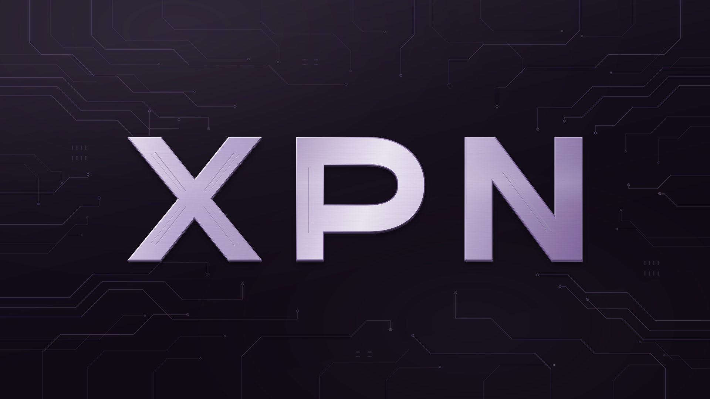

Безопасность
в основе
Защищённое подключение — отправная точка вашего пространства в сети.
Система безопасного подключения XPN.
Больше свободы в сети. Больше скорости для вас.

СИСТЕМА БЕЗОПАСНОГО ПОДКЛЮЧЕНИЯОбщение, работа, новые идеи — в центре всего ваше подключение. XPN объединяет безопасность и высокую скорость, чтобы вы могли сосредоточиться на главном.
Что делает XPN особеннымТри составляющие XPN.
Одна простая идея: комфорт в сети.
Защищённое подключение — отправная точка вашего пространства в сети.
Высокая скорость подключения для того, чем вы занимаетесь каждый день.
Перейдите в XPN в Telegram, чтобы узнать подробности и начать подключение.
Перейдите по кнопке в XPN.
Ознакомьтесь с информацией о подключении.
Следуйте инструкциям в Telegram.